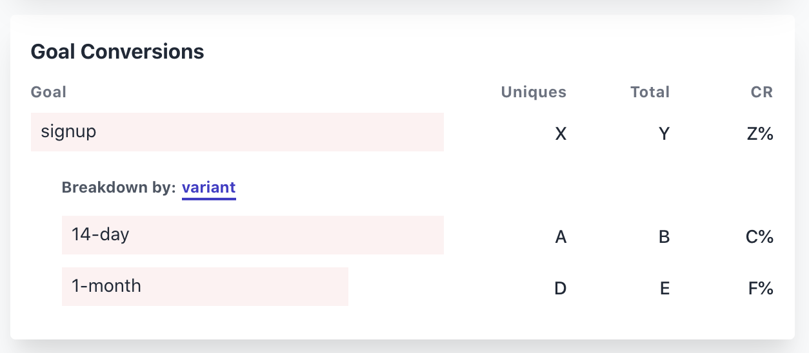

This post first appeared on the QueryCal technical blog.
A/B testing is a lifesaver for a solo SaaS developer. While it’s hard to predict whether a 14-day or 1-month trial is going to get a better signup rate, it’s really simple to test: show half of people the 14-day button and the other half the 1-month button and just measure the click-through rate.
There are loads of tools out there to help you do this, but rule #1 of running a micro-SaaS like QueryCal is to keep your technology stack simple—it’s better to focus your time on features, not integrating a bunch of different technologies.
Here’s how QueryCal does A/B testing using only Caddy, a static site generator, and Plausible Analytics.
QueryCal’s web architecture
QueryCal’s web architecture is very simple. There’s a public-facing Caddy server that forwards requests to either the landing page (web.landing) or the docs site (web.docs). These two sites are themselves just simple static file servers.
The Caddy config looks like this (I’m using docker-compose so web.landing resolves to the IP of the container serving the landing page):
querycal.com/docs {
reverse_proxy web.docs:80
}
querycal.com {
reverse_proxy web.landing:80
}
So, how is this simple setup going to do A/B testing? It needs to:
- Be able to serve two different experimental variants of the site
- Split visitors evenly into the two experiments
- Track which experiment each visitor was seeing when they signed up
Most A/B testing solutions would need some backend code to accomplish this, but with some clever use of Caddy, it’s possible to do all this while still keeping the architecture simple, and only using static file servers:
Challenge 1: Serving A/B versions of a static site
The QueryCal landing page is just some plain HTML, CSS, and JS that’s bundled up using a tool called Parcel.
Normally Parcel takes the HTML/CSS/JS and generates a single bundle of the static site but, by using a plugin called posthtml-expressions, we can actually get it to generate the two variants.
posthtml is a HTML post-processor and the posthtml-expressions plugin adds support for some basic conditionals so we can write HTML like this:
<if condition="variantA">
<a href="/register?trial=14">14-day free trial</a>
</if><else>
<a href="/register?trial=28">1-month free trial</a>
</else>
At build time this gets processed and converted into a single button that either says “14-day free trial” or “1-month free trial” depending on whether the condition “variantA” is true.
This condition gets set based on an environment variable using this short posthtml.config.js file:
module.exports = {
plugins: [
require("posthtml-expressions")({
locals: { variantA: process.env.VARIANT === "A" },
}),
],
};
Now when we run VARIANT=A parcel build we’ll get one version of our site and when we run VARIANT=B parcel build we’ll get the other!
Challenge 2: Splitting visitors into A/B variants with Caddy
Now that we can easily generate two different variants of a static site, we need a way to randomly show each to half of the visitors.
Ideally, the solution needs to:
- Split visitors as close to 50:50 as possible (otherwise it’s harder to work out which experiment performed best)
- Consistently show the same variant of the site to each individual (it’d be confusing if the page kept changing when you reloaded it)
- Not require cookies (that’d defeat the point of using cookie-free analytics like Plausible)
Luckily Caddy has a directive that can do exactly this: a reverse_proxy that uses the ip_hash load balancing policy.
querycal.com {
reverse_proxy web.landing.a:80 web.landing.b:80 {
lb_policy ip_hash
}
}
This Caddyfile means, for requests to querycal.com:
- First, Caddy takes the visitor’s IP and hashes it
- If the hash is “even”, Caddy reverse-proxies the request to
web.landing.a - If the hash is “odd”, Caddy reverse-proxies the request to
web.landing.b
This is great because it means:
- Visitors will be very evenly split between the two variants
- As long as a visitor’s IP remains the same, they’ll always see the same variant
- All without requiring any cookies!
The only complexity this adds to our architecture is having to run one static file server per variant of the QueryCal landing page.
Challenge 3: Tracking A/B conversion rate with Plausible Analytics
Now that we’ve got visitors being shown the two variants of our site, all that’s left is to track the success rate of each. This is easily done by extending the if-else to use Plausible’s custom props feature.
<if condition="variantA">
<a href="/register?trial=14" onclick="plausible('signup', {props: {variant: '14-day'}}">14-day free trial</a>
</if><else>
<a href="/register?trial=28" onclick="plausible('signup', {props: {variant: '1-month'}}">1-month free trial</a>
</else>
Now when someone signs up:
- If they saw the 14-day trial button, a conversion gets logged with the tag
variant: 14-day - If they saw the 1-month trial button, a conversion gets logged with the tag
variant: 1-month.
This gets nicely broken down in the Plausible UI: 
Limitations of this method
While this is a nice simple way to implement A/B testing, it does have some limitations compared to a more full-featured A/B testing solution. But, these limitations are fairly minor and, for small sites like QueryCal, are definitely worth the tradeoff.
The A/B split is only done on IP, not per-visitor
Because we’re using the visitor’s IP address to decide which variant to show, an even split isn’t guaranteed. It’s common for universities and phone providers to put all of their users behind a small number of IP addresses rather than assigning them all unique ones (using Carrier-grade NAT). This could cause some problems with the data because all of these people will be shown one variant and not the other.
It only supports a fixed number of variants
Full-featured A/B testing tools will let you create many different variants of a button and test them all at the same time. Because we have to statically generate each version of the site, this technique only really works for a small number of variants (I’m only ever using two at a time).
Simultaneous experiments get bundled together
Say you’re running two simultaneous experiments: the 14-day vs 1-month trial button test and another test of whether the pricing information should come before or after a demo.
A proper A/B testing solution would show 4 different versions of the site:
- 14-day trial, pricing first
- 14-day trial, demo first
- 1-month trial, pricing first
- 1-month trial, demo first
But because we’re statically generating the versions of our site we get just two:
- 14-day trial, pricing first
- 1-month trial, demo first
If the second variant shows much higher signup rate, it’ll be hard to tell if it was the 1-month trial or showing the demo before the pricing that was actually responsible. This isn’t a killer problem, but it’s worth bearing in mind—where possible, don’t run multiple experiments that are trying to improve the same metric.
What is QueryCal?
QueryCal takes your calendars and lets you query them as if they were an SQL database. It uses the real SQLite query engine so you can write queries to calculate metrics based on your calendar events and correlate events between your different calendars.
Sound interesting? Sign up for a free trial.